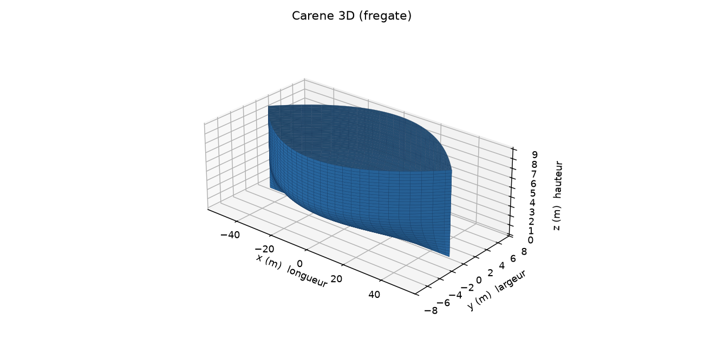
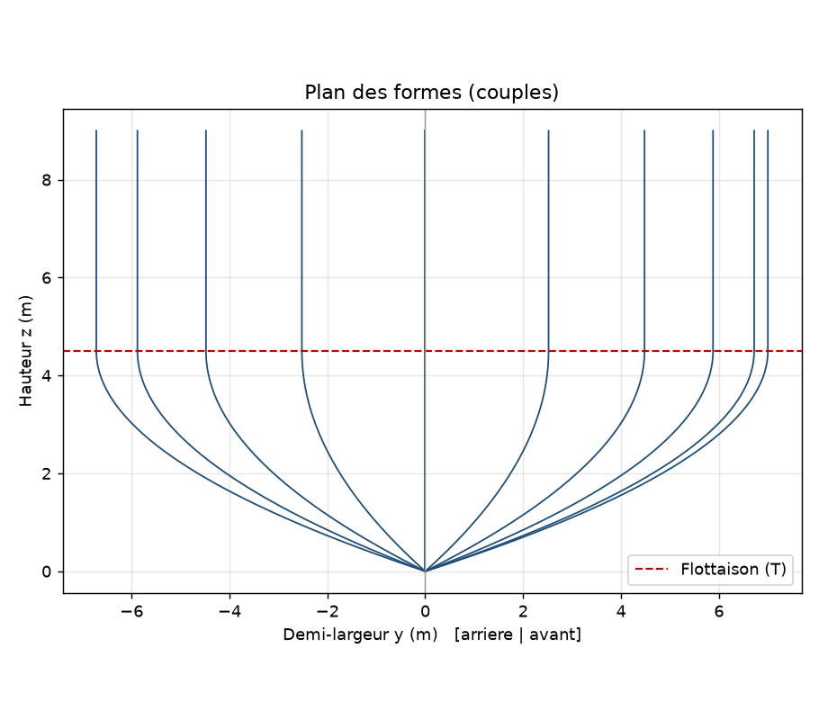
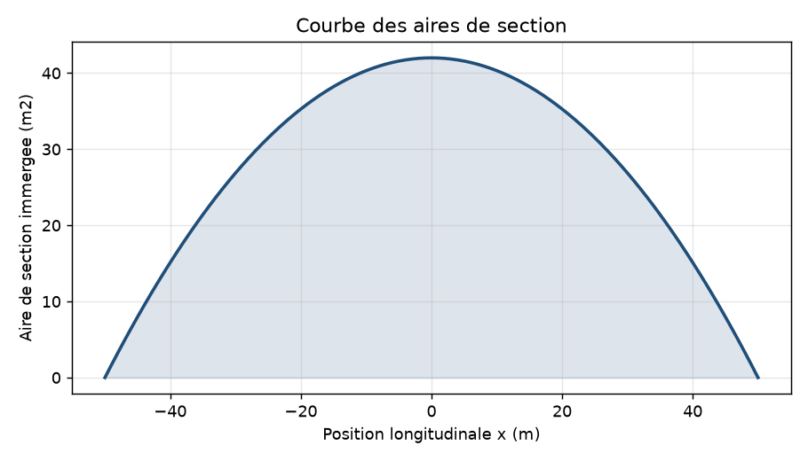
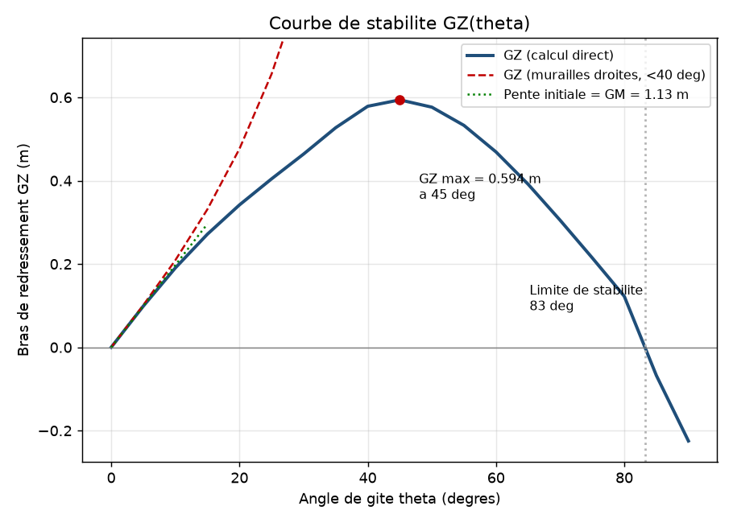

Un outil Python complet : de la génération paramétrique de la coque à la courbe de stabilité GZ, avec export vers la CAO.
Par Ayoub Jemel — Licence Physique CUPGE, UBS Lorient · Candidat ENSTA Bretagne (architecture navale) · LinkedIn
Une frégate de surface générée par un modèle paramétrique (L = 100 m, B = 14 m, T = 4,5 m). Tous les résultats ci-dessous sont calculés par le code, sans logiciel métier.
La coque est décrite par une fonction de demi-largeur b(x,z) pilotée par quelques paramètres. Changer la largeur régénère tout le navire.
Volume, déplacement, centre de carène et métacentre calculés par la méthode de Simpson, codée à la main, comme les architectes navals.
Le navire est incliné numériquement de 0 à 90° : découpe des sections par la flottaison, volume conservé par dichotomie, bras de redressement GZ.
La coque part vers Fusion 360 en STL et DXF (couples à lofter), avec la table des cotes au format tableur.




La hauteur métacentrique GM est obtenue par deux méthodes totalement indépendantes. Leur concordance (écart < 1,5 %) valide la chaîne de calcul complète.
La formule des murailles droites confirme également la courbe GZ aux angles modérés, puis diverge au-delà de 40°, conformément à la théorie.
Phase 2 prévue (2027) : navire de soutien offshore (OSV), couplage gîte/assiette, résistance à l'avancement.